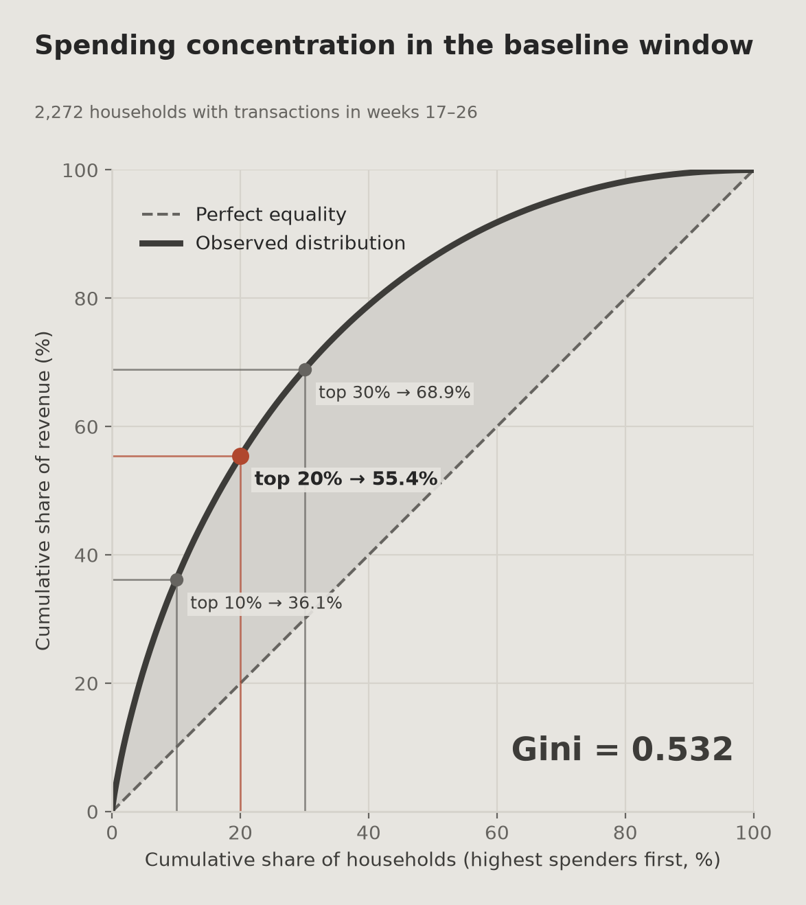
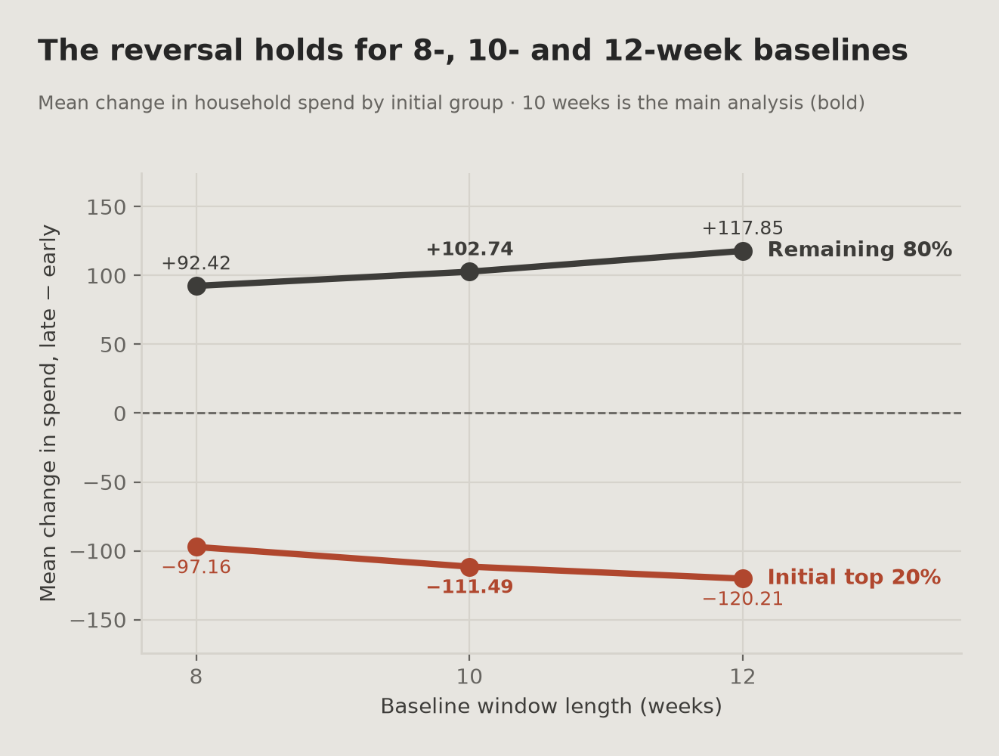
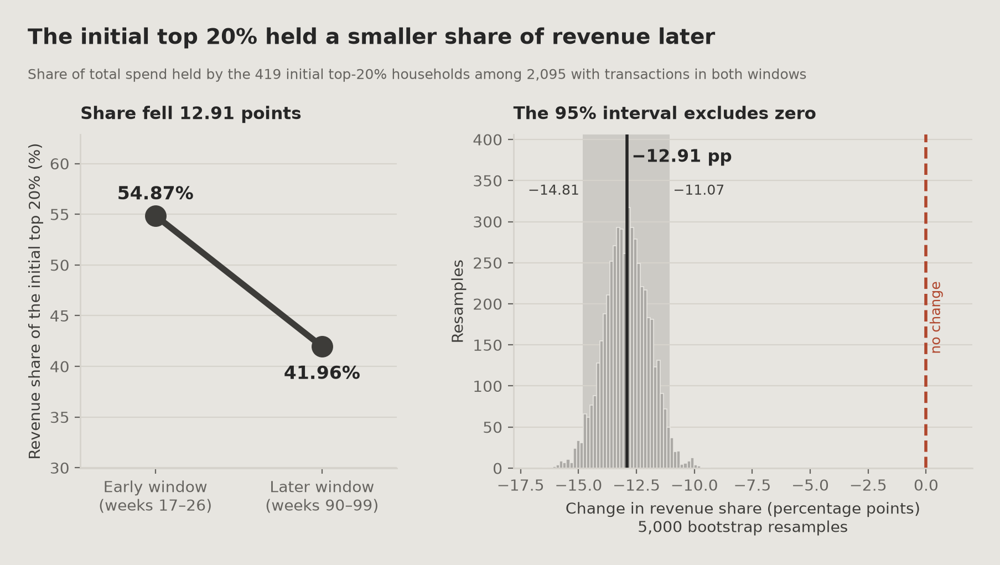
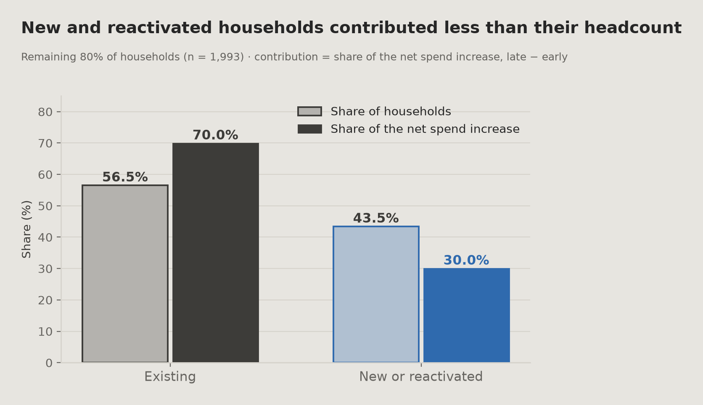
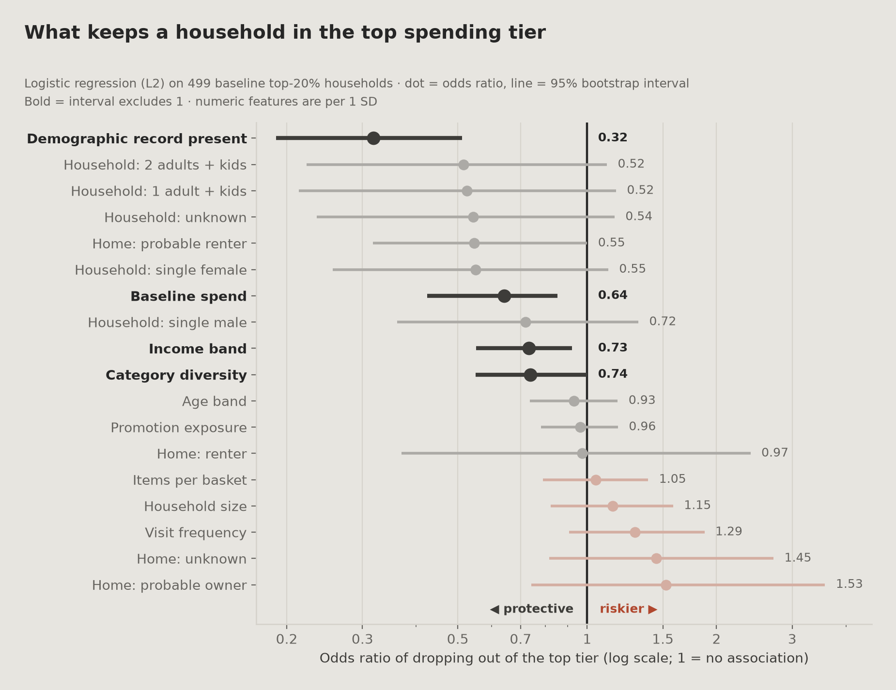
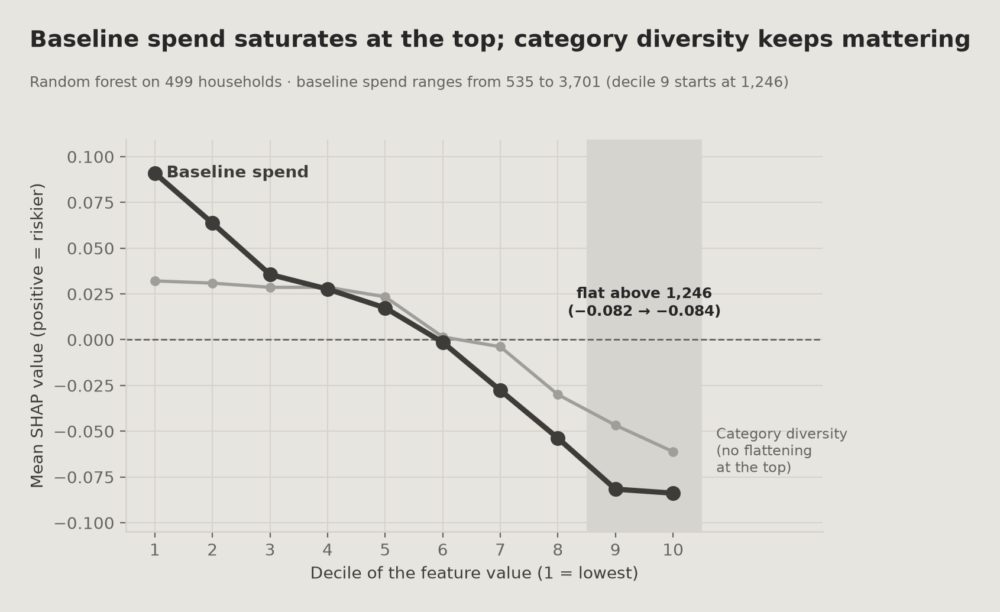

00
요약
질문, 방법, 결과를 짧게
가설은 매출 증가가 고지출 고객이 더 쓴 데서 나왔다는 것이었습니다. 데이터에서 초기 상위 20%는 17~26주보다 90~99주에 덜 썼고, 나머지 가구는 더 썼습니다. 두 기간을 비교한 것이라 지출이 왜 바뀌었는지는 밝히지 못하며, 평균으로의 회귀도 배제하지 못합니다.
검정하는 주장. 매출 증가가 소수의 고가치 가구에 몰려 있다. 사실이라면 상위 고객은 절대 지출과 매출 비중 모두 늘었어야 합니다.
세 가지 결과: 지출 변화와 매출 비중
| 검정 | 결과 (중앙값 변화, 비중 변화는 pp) | 의미 |
|---|---|---|
| 상위 20% · 절대 지출 | −131.45 | 초기 상위 20%의 지출 중앙값이 감소 |
| 나머지 80% · 절대 지출 | +36.49 | 나머지 가구의 지출 중앙값이 증가 |
| 상위 20% · 매출 비중 | −12.91 pp | 상위 집단의 매출 비중이 감소 |
검정 A와 B(앞의 두 줄)는 가구 단위 검정 A~C 세 개 중 두 개입니다. 세 검정은 먼저 함께 Bonferroni 보정했습니다(α = 0.05 / 3 ≈ 0.0167, 검정 C인 집단 간 Mann-Whitney U는 05장에 있음). 검정 D는 H4-1의 세 번째 비교로 계획했지만 처음의 세 검정 묶음에는 없었고, A~C 결과를 본 뒤 추가해서 묶음이 검정 네 개가 됐습니다(α = 0.05 / 4 = 0.0125). Bonferroni 기준은 A~C의 p값에만 적용했고, 각 판정은 두 기준에서 모두 같습니다. 마지막 줄이 검정 D이며 p값이 없고, 비중 변화의 보정 전 95% 부트스트랩 구간이 0을 포함하지 않는지로만 판단합니다. 보정된 구간은 계산하지 않았고 보정 후 유의성도 주장하지 않습니다. 세 줄 모두 H4-1 패널(가구 2,095개, 상위 20% 419개, 나머지 80% 1,676개)을 씁니다. 절대 지출과 매출 비중 어느 쪽으로 봐도 가설은 지지되지 않습니다.
주요 결과
변화의 방향은 기준 기간 길이에 달려 있지 않습니다. 기준 기간을 8주, 10주, 12주로 다시 돌려도 매번 부호가 같습니다. 이는 민감도 점검이며 평균으로의 회귀를 배제하지는 않습니다.
신규·재활성 가구는 상위 20% 밖에 더 많습니다: 나머지 80%의 43.5%, 상위 20%의 13.6%입니다(넓은 패널: 17~99주에 거래가 있는 가구 2,492개, 상위 20% = 499, 나머지 80% = 1,993). 연관은 중간 정도입니다(Cramér's V = 0.246).
연관과 기여는 다른 척도입니다. 넓은 패널(기준 기간 거래가 없는 가구는 기준 지출을 0으로 둠)에서 이 가구들은 나머지 80%(가구 1,993개)의 인원 기준 43.5%이지만, 그 집단 순지출 증가의 30.0%만 차지합니다. 증가의 대부분은 신규·재활성 가구가 아니라 기존 가구에서 나왔습니다. 이는 인과 추정이 아니라 회계적 분해입니다.
탐색적 모델로 어떤 기준 기간 특성이 상위 등급 이탈과 연관되는지 봤습니다. 인구통계 기록이 있는지가 가장 뚜렷한 연관을 보이고(OR 0.32, 95% CI 0.19~0.51), 방문 빈도는 연관이 확인되지 않았습니다(OR 1.29, CI 0.91~1.87이 1을 포함).
유지 전략에 주는 의미
상위 20% 밖의 가구도 고려하기
이 데이터에서 지출 증가는 초기 상위 20% 밖의 가구, 그중에서도 주로 기존 고객에게서 나타납니다(넓은 패널, 가구 2,492개, 나머지 80% = 1,993). 과거 지출이 가장 높은 고객만 겨냥한 유지 전략은 관찰된 증가의 대부분을 다루지 못합니다.
한눈에 보기
01
개요
무엇을 왜 검정했는가
흔한 가정은 소수의 고지출 고객이 매출을 떠받치므로 성장도 그들에게서 나온다는 것입니다.
이 케이스는 그 가정을 검정합니다. 83주 안정 기간의 가구 거래 데이터로 두 10주 기간(17~26주, 90~99주)을 비교해서, 처음부터 고지출이었던 가구가 절대 지출과 전체 매출 비중을 늘렸는지, 그렇지 않다면 증가가 어떤 가구에서 왔는지 묻습니다.
범위
여러 가설을 다룬 팀 프로젝트였습니다. 이 페이지는 그중 제가 분석한 H4를 정리한 것입니다.
상위 고객의 정의가 중요한 이유
직접 검정하면 순환이 됩니다. "상위 고객"을 전체 기간으로 정의하면 분석은 "성장한 가구가 고지출로 분류됐는가"를 재게 되고, 답은 당연히 그렇다입니다. 그래서 집단은 어떤 검정보다 먼저 기준 기간만으로 정의해야 합니다.
이 결과는 유지 예산을 어디에 쓸지에 영향을 줍니다. 성장이 고지출 고객에게 몰려 있다면 그들을 지키는 프로그램이 그 성장을 다룹니다. 그렇지 않다면 그들만 겨냥한 프로그램은 이후 기간에 지출이 낮아진 집단을 겨냥하게 됩니다.
02
비즈니스 질문
가설 H4와 검정 가능한 두 주장
H4: 매출 증가는 소수의 고지출 가구에 몰려 있다
| # | 주장 | 반증 조건 |
|---|---|---|
| H4-1 | 기준 기간으로 고정한 상위 X% 가구는 이후에 매출 비중과 절대 지출이 모두 늘었다 | 둘 중 하나라도 늘지 않음 |
| H4-2 | 상위 고객 여부는 신규·재활성 여부와 연관된다 | 분할표에서 연관이 없음 |
데이터의 가구
2,500
안정 기간
83주
기준 기간
10주
기준선
상위 20%
03
데이터
데이터 출처, 기준 기간 선택, 상위 X% 기준선
출처
Dunnhumby "The Complete Journey": 가구 2,500개의 가구 단위 거래 기록과 인구통계, 캠페인, 쿠폰, 상품 표. 분석은 83주 안정 기간(17~99주)을 씁니다. 2,500개 가구 중 2,492개가 17~99주에 거래가 있고, 아래 단계는 서로 다른 부분집합을 씁니다: 집중도 지표 2,272개, H4-1 검정 2,095개, 교차표와 모델 2,492개.
데이터는 교육용 포트폴리오 목적으로 사용했습니다. 이 페이지는 팀 프로젝트 중 제가 분석한 부분(가설 H4)을 정리한 것입니다.
이 분석의 두 매개변수는 데이터의 성질이 아니라 분석가의 선택입니다: 기준 기간 길이와 "상위 X%" 기준선. 둘 다 고정하기 전에 데이터로 확인했습니다.
선택 1 · 기준 기간 길이
짧은 기간은 잡음으로 가구 순위를 매기고, 긴 기간은 측정할 기간을 다 써 버립니다. 후보 길이마다 기간을 홀수 주와 짝수 주로 나누고, 두 반쪽에서 따로 가구 순위를 매겨 두 순위의 상관을 구했습니다. 그 길이에서 순위가 얼마나 재현되는지를 직접 재는 방법입니다.
엘보
10주
순위 상관
ρ = 0.697
상한 적용
기간의 15% 이하
뚜렷한 엘보는 없었습니다. ρ = 0.697은 중간 정도라서 상위 X% 명단에는 잡음이 어느 정도 섞여 있습니다. 그래서 05장의 민감도 점검으로 결과가 기간 길이에 달려 있는지 시험합니다.
선택 2 · 상위 X% 기준선
관례적인 20%를 쓰기 전에 지출의 집중도를 쟀습니다.
| 지표 | 값 |
|---|---|
| 지니 계수 | 0.532 |
| 상위 10%의 매출 비중 | 36.1% |
| 상위 20%의 매출 비중 | 55.4% |
| 상위 30%의 매출 비중 | 68.9% |
분포는 80/20 법칙을 따르지 않습니다. 80/20이라면 상위 20%가 매출의 80%를 가져야 하지만 여기서는 55.4%입니다(17~26주에 거래가 있는 가구 2,272개). 지출은 집중되어 있지만 분포의 나머지도 상당한 비중을 차지합니다. 엘보 탐지는 기준선을 18%로 잡아 관례적인 기준과 가까웠으므로 20%를 채택했습니다.

이상치 처리
IQR 규칙은 거래 금액의 7.34%를 이상치로 표시했습니다. 지출은 오른쪽으로 치우쳐 있으므로, 이를 데이터 문제의 근거가 아니라 IQR 규칙이 이 분포에 맞지 않는 것으로 봤습니다. 또 가설이 고지출 가구에 대한 것이므로, 그들을 지우면 시험할 데이터를 지우게 됩니다. 모든 관측치를 남기고 대신 순위 기반 검정을 썼습니다.
04
방법론
기준 기간만으로 집단 정의, 통계 검정 선택
상위 고객을 기준 기간 데이터로만 정의
"상위 X%"는 기준 기간 데이터만으로 고정하고 다시 계산하지 않습니다.
이후 기간 데이터가 정의에 들어가면 질문이 "이미 고지출이었던 가구가 성장했는가?"에서 "성장한 가구가 고지출로 분류됐는가?"로 조용히 바뀌고, 실제 패턴과 상관없이 양의 결과가 나옵니다. 뒤의 모든 결과가 이 규칙에 기댑니다.
분포에 따른 검정 선택
| 확인 | 결과 | 결론 |
|---|---|---|
| 정규성 (Shapiro-Wilk) | 두 집단 모두 기각 | 모수적 평균 검정을 쓰지 않음 |
| 등분산 (Levene) | 기각, 상위 20%의 분산이 나머지의 3배 이상 | 합동 분산 t검정을 쓰지 않음 |
| 결정 | 집단 내 변화는 Wilcoxon 부호 순위, 집단 간은 Mann-Whitney U, 비중 지표는 부트스트랩 | |
서로 관련된 가구 단위 검정 세 개(A~C)는 먼저 함께 Bonferroni 보정했습니다: α = 0.05 / 3 ≈ 0.0167. 부트스트랩 검정 D는 H4-1의 세 번째 비교로 계획했지만 처음의 세 검정 묶음에는 없었고, A~C 결과를 본 뒤 추가해서 묶음이 검정 네 개가 됐습니다(α = 0.05 / 4 = 0.0125). Bonferroni 기준은 검정 A~C의 p값에만 적용했고 두 기준 모두에서 유의하므로 판정은 바뀌지 않습니다. 검정 D는 p값이 없고 보정 전 95% 부트스트랩 구간이 0을 포함하지 않는지로만 판단합니다. 다중성을 보정한 구간은 계산하지 않았고 보정 후 유의성도 주장하지 않습니다. 05-C장의 기존 vs 신규 비교는 별도의 H4-2 검정이며, 아래에 자체 p값과 함께 보고합니다.
비중 지표의 부트스트랩 구간
매출 비중은 가구별 값이 아니라 집단 단위 비율이라서 순위 기반 검정을 쓸 수 없습니다. 5,000회 부트스트랩으로 구간을 직접 만들었습니다.
기준 기간 길이에 대한 민감도 점검
첫 결과는 가설과 반대로 나왔습니다. 초깃값이 높아서 뽑힌 집단은 나중에 평균 쪽으로 다가가는 경향이 있으므로 평균으로의 회귀가 가능한 설명이었고, 그래서 기준 기간 길이에 대한 강건성 점검을 했습니다. 이 점검은 평균으로의 회귀를 배제하지 못합니다.
05
분석
민감도 점검, 집단 검정, 기여 분석
A · 기준 기간 길이에 대한 민감도
기준 기간과 이후 기간 사이의 가구별 지출 변화를 비교하자 H4-1의 예측과 반대가 나왔습니다: 나머지 80%는 늘고 상위 20%는 줄었습니다. 이것이 고른 기준 기간에 달려 있는지 보려고 기준 기간 8주, 10주, 12주로 비교를 반복했습니다.
| 기준 기간 길이 | 나머지 80% (평균 변화) | 상위 20% (평균 변화) |
|---|---|---|
| 8주 | +92.42 | −97.16 |
| 10주 | +102.74 | −111.49 |
| 12주 | +117.85 | −120.21 |
모든 기준 기간 길이에서 부호가 같고, 기준 기간이 길어질수록 두 집단의 차이가 조금 커집니다. 이는 완전한 식별 전략이 아니라 민감도 점검이며, 평균으로의 회귀를 배제하지 않습니다. 명단은 꽤 안정적이어서 세 명단의 Jaccard 겹침은 0.76~0.86입니다.

결과의 부호는 8주, 10주, 12주 기준 기간에서 안정적이지만 평균으로의 회귀를 배제할 수 없습니다. 그래서 이 패턴을 지출 수준의 수렴으로 기술합니다.
B · 지출 변화와 매출 비중 검정
| 검정 | 통계량 | 효과 크기 | 판정 |
|---|---|---|---|
| 상위 20% 변화 (Wilcoxon) | p = 0.00002 | r = −0.209 | 감소 |
| 나머지 80% 변화 (Wilcoxon) | p = 8.8 × 10⁻³¹ | — | 증가 |
| 집단 간 차이 (Mann-Whitney U) | p = 3.3 × 10⁻²⁰ | r = 0.290 | 다름 |
| 상위 20% 비중 (부트스트랩) | −12.91 pp | 보정 전 95% CI가 0을 포함하지 않음 | 하락 |
집단 간 검정에서 가장 해석하기 쉬운 값은 공통 언어 효과 크기입니다: 0.355이며, 차이가 없으면 0.5입니다. 각 집단에서 가구를 하나씩 무작위로 뽑으면 상위 20% 가구가 더 많이 성장한 쌍은 35.5%이고, 차이가 없다면 50%여야 합니다.

C · 연관과 기여
관찰된 증가가 나머지 80%에 있었으므로, 다음 질문은 그 증가가 신규·재활성 가구의 유입에서 왔는지 기존 가구가 더 쓴 것에서 왔는지입니다. 먼저 분할표로 이 가구 유형이 두 집단에 어떻게 나뉘는지 봅니다.
| 집단 | 기존 | 신규 / 재활성 |
|---|---|---|
| 나머지 80% | 1,127 (56.5%) | 866 (43.5%) |
| 상위 20% | 431 (86.4%) | 68 (13.6%) |
이 표는 17~99주에 거래가 있는 가구 2,492개(상위 20% 499개, 초기 지출 ≥ 535.29)를 다루며, 위의 419개 가구 집단과는 다르게 자른 것입니다. 2,500개 중 나머지 8개(기존 7개, 재활성 1개)는 그 기간에 거래가 없어 표에 없습니다.
카이제곱 p = 1.5 × 10⁻³⁴, Cramér's V = 0.246으로 중간 정도의 연관입니다. 신규·재활성 가구는 압도적으로 나머지 80%에 있습니다(934개 중 866개).
순증가에 대한 기여
이 표와 맞는 해석은 두 가지가 남습니다: 이 가구들이 추가 매출의 큰 부분을 차지했거나, 평균적으로 덜 써서 아래 집단에 몰렸을 뿐이거나. 둘을 구분하려면 그들의 순증가에 대한 실제 비중을 계산해야 합니다.
| 코호트 | 인원 비중 (나머지 80%) | 순증가 비중 (나머지 80%) | 중앙값 변화 |
|---|---|---|---|
| 기존 | 56.5% | 70.0% | +51.78 |
| 신규 / 재활성 | 43.5% | 30.0% | +10.26 |
기여가 인원 비중보다 작습니다. 신규·재활성 가구는 집단의 43.5%이지만 순증가의 30.0%입니다. 기존 가구의 중앙값 변화는 신규·재활성 가구의 약 5배이고(+51.78 vs +10.26), 평균은 +119.96 vs +67.07입니다. 이는 관찰된 변화의 회계적 분해이지 인과 추정이 아닙니다.

통계적 유의성과 효과 크기
두 코호트를 직접 검정하면 p = 0.000928로 p값이 작습니다. 이는 H4-1의 네 검정 묶음 밖에 있는 별도의 H4-2 검정이고, 노트북에서 다중성 보정이나 판정 기준을 정하지 않았습니다. 효과 크기는 순위 이연 상관 0.086이고, 공통 언어 효과 크기는 귀무 0.5 대비 0.457입니다. 가구가 1,993개(신규·재활성 866, 기존 1,127)이면 효과 크기가 작은 차이에도 p값이 작게 나올 수 있으므로, p값과 함께 효과 크기를 보고합니다.
06
결과
H4-1과 H4-2의 결과, 탐색적 모델
H4-1 지지 안 됨
두 관점 모두에서 상위 20%는 이후 기간에 값이 낮았습니다(H4-1 패널, 가구 2,095개, 상위 20% = 419): 절대 지출 중앙값 131.45 감소, 매출 비중 12.91포인트 감소. 데이터는 대신 수렴 패턴을 보여 줍니다: 이후 기간에 초기 상위 20%는 덜 쓰고 나머지 80%는 더 썼습니다.
H4-2 지지되지만 다시 정리
연관은 성립하지만(Cramér's V = 0.246) 그로부터 큰 기여가 따라 나오지는 않습니다. 넓은 패널(가구 2,492개)에서 나머지 80%(가구 1,993개)의 순지출 증가 중 70%는 기존 가구에서 나왔습니다. 나머지 80% 안에서 관찰된 증가의 대부분은 신규·재활성 가구가 아니라 기존 가구에서 나왔습니다.
탐색적 유지 위험 모델
통계 검정은 두 기간 사이에 무엇이 바뀌었는지 기술할 뿐, 어떤 가구가 상위 등급에서 이탈할 가능성이 큰지는 알려 주지 않습니다. 그래서 기준 기간에 상위 20%였던 499개 가구(17~99주에 거래가 있는 2,492개 중)로 마지막에도 상위에 남았는지 예측하는 모델을 만들었습니다. 모델은 탐색적입니다. 499행은 작은 표본이고, 목표는 운영용 점수기가 아니라 연관 요인을 찾는 것입니다.
시간 누수 없음
변수 ← 17~26주 · 목표 ← 90~99주
모든 변수는 기준 기간만으로 만들었고, 목표는 이후 기간만으로, 원래 변화량이 아니라 다시 계산한 순위로 정의했습니다. 이후 기간 정보는 어느 단계에서도 변수에 들어가지 않습니다.
| 모델 | PR-AUC | 판정 |
|---|---|---|
| 무작위 기준선 | 0.447 | 양성 비율과 같음 |
| 로지스틱 회귀 | 0.685 | 선택: 재현율이 더 높고(0.601 vs 0.529) 해석 가능 |
| 랜덤 포레스트 | 0.657 | 재현율이 더 낮음(0.529 vs 0.601). 499개 표본은 트리 모델에 너무 작을 수 있음 |
주 지표는 정확도가 아니라 PR-AUC와 재현율이었습니다. 위험 가구를 놓치는 비용이 유지 메시지 하나를 더 보내는 비용보다 크다면 재현율에 더 무게를 둬야 합니다. 캠페인 비용 자료가 없어서 이익 최적 기준값은 정하지 못했습니다. 이 데이터와 표본 크기에서는 로지스틱 회귀가 더 나은 모델입니다: 이탈한 223개 가구 중 89개(40%)를 놓쳤고, 포레스트는 105개(47%)를 놓쳤습니다.

로지스틱 모델의 두 가지 결과
인구통계 기록이 있는 것이 상위 등급 유지와 가장 뚜렷한 연관을 보입니다(OR = 0.32, 95% CI 0.19~0.51). 참여도를 대신하는 것일 수 있지만, 기록이 있어서 가구가 상위에 남는다는 것을 보여 주지는 않습니다.
방문 빈도는 연관이 확인되지 않았습니다. 모델의 다른 변수를 고려하면 OR 1.29(1 SD당, 95% CI 0.91~1.87로 1을 포함)입니다. 점추정은 위험이 높은 쪽으로 기울지만 위험 요인으로 읽어서는 안 됩니다.
랜덤 포레스트 SHAP 중요도와의 비교
랜덤 포레스트의 SHAP 중요도는 로지스틱 결과와 꽤 겹칩니다. 상위 5개 변수 중 4개(인구통계 기록, 기준 지출, 범주 다양성, 소득 구간)는 로지스틱에서도 구간이 1을 포함하지 않는 변수입니다(범주 다양성은 경계선, 상한 0.998).
포레스트는 선형 로지스틱 모델이 보여 주지 못하는 비선형 패턴, 예를 들어 기준 지출이 높을 때 평평해지는 모양도 보여 줄 수 있습니다.

모델 검증
순열 검정 p = 0.001 (1,000회, 가능한 최솟값) · 층화 더미 기준선(PR-AUC 0.4325)보다 나음 · 학습/검증 간 큰 차이의 징후 없음
순열 검정은 결과를 무작위로 섞은 것보다 성능이 낫다는 것을 시사하고, 학습/검증 간 큰 차이의 징후는 없습니다. 검증 PR-AUC는 마지막 다섯 학습 크기에서 평평하므로(0.680~0.687) 가구를 훨씬 더 늘려도 그림이 바뀔 것 같지는 않습니다. 다른 기간이나 다른 소매업체에서의 성능은 시험하지 않았습니다.
07
비즈니스 시사점
유지 프로그램과 보고에 주는 의미
① 관찰된 증가는 상위 20% 밖에 있습니다
관찰된 지출 증가는 나머지 80%에 있습니다. 넓은 패널(가구 2,492개, 나머지 80% = 1,993)에서 그 대부분(70.0%)은 기존 가구에서 나왔습니다. 초기 고지출 고객을 지키는 것만으로 만든 전략은 지출 중앙값이 131.45 떨어진 집단을 겨냥하게 됩니다(H4-1 패널, 가구 2,095개, 상위 20% = 419).
② 신규·재활성 가구의 기여는 인원 비중보다 작았습니다
넓은 패널에서 신규·재활성 가구는 나머지 80%(가구 1,993개)의 43.5%이지만 순지출 증가의 30%입니다. 이는 회계적 분해이며, 유치 노력이 효과가 있었는지나 예산을 어디에 써야 하는지를 보여 주지는 않습니다.
③ 인구통계 기록이 있는 것은 상위 등급 유지와 연관됩니다
인구통계 기록이 있는 것이 가장 뚜렷한 연관을 보이고(OR 0.32), 기준 지출도 연관되지만(1 SD당 OR 0.64) 둘은 척도가 달라 순위를 매기지 않습니다. 참여도 지표 후보로 확인해 볼 만하지만, 이 데이터로는 참여 저하가 지출 감소에 앞서는지 뒤따르는지 알 수 없습니다.
④ 기준 지출에 대한 모델의 반응은 위쪽에서 평평해집니다
랜덤 포레스트에서 기준 지출과 예측 위험의 연관은 초기 지출 약 1,250 위에서 평평해집니다. 범주 다양성은 위쪽에서 평평해지지 않습니다. 이는 모델의 예측을 기술한 것이며, 어떤 기준값 근처의 유지 노력이 더 큰 성과를 낸다는 것을 보여 주지는 않습니다.
권고
01 유지 프로그램을 상위 20% 밖으로 넓히는 것을 시험하기
- 누가
- CRM·로열티 프로그램 담당자
- 무엇을
- 순수한 상위 20% 정의에서 상위 20% 밖의 기존 가구 쪽으로 예산 가중치를 옮기는 것을 시험합니다. 이 분석의 결과가 아니라 평가할 가설입니다
- 왜
- H4-1 패널(가구 2,095개)에서 상위 20%는 중앙값 131.45 줄었고 나머지 80%는 중앙값 36.49 늘었습니다. 상위 20% 정의로는 관찰된 증가가 있는 가구를 겨냥하지 못합니다
- 확인 방법
- 방향을 바꾼 프로그램에서 상위 20% 밖 가구의 짝지은 일부를 제외하고, 두 기간 뒤 유지율을 비교합니다
02 인구통계 기록이 없는 것이 상위 등급 이탈 신호인지 확인하기
- 누가
- 유지 분석팀, 고객 인사이트팀
- 무엇을
- 지출과 함께 가구에 인구통계 기록이 있는지, 구매 외 접점(프로필 작성, 프로그램 참여)에 어떻게 참여하는지를 추적해, 이것이 누가 상위 등급에서 이탈하는지에 대한 정보를 담고 있는지 확인합니다
- 왜
- 모델에서 인구통계 기록이 있는 것이 상위 등급 유지와 가장 뚜렷한 연관을 보였습니다(OR = 0.32, 95% CI 0.19~0.51). 수치형 변수는 1 SD당, 이진 변수는 0 vs 1이라 오즈비를 크기 순으로 줄 세우지 않습니다
- 주의
- 가구 499개 탐색적 모델의 연관입니다. 이 신호를 측정할 근거는 되지만 그것으로 결정을 자동화할 근거는 되지 않으며, 이 데이터로는 참여 저하가 지출 감소에 앞서는지 뒤따르는지 알 수 없습니다
03 매출 집중도를 추이로 보고하기
- 누가
- 영업 보고
- 무엇을
- 상위 20% 매출 비중을 한 시점이 아니라 시계열로 보고합니다. 집중도 표본(17~26주에 거래가 있는 가구 2,272개)에서 상위 20%는 기준 기간 매출의 55.4%를 차지했고, 가구 2,095개 H4-1 패널의 초기 상위 20% 419개 가구는 기준 기간 54.87%, 90~99주 41.96%로 12.91포인트 떨어졌습니다
- 왜
- 한 시점의 집중도로는 기준 기간 상위 집단의 비중이 오르는지 내리는지 알 수 없습니다
08
한계
이 분석이 뒷받침할 수 없는 것
이 분석은 수렴 패턴을 기록합니다. 왜 일어났는지는 설명하지 않으며 인과 연구도 아닙니다.
기여 분석은 인과 추론이 아닙니다
05-C장은 증가가 어디서 왔는지 분해합니다. 반사실은 세우지 않습니다. 신규·재활성 가구가 없었다면 무슨 일이 일어났을지는 여기서 아무것도 말해 주지 않습니다.
중간 정도의 기준 기간 신뢰도
고른 기간에서 홀수/짝수 순위 상관은 ρ = 0.697이므로 상위 X% 명단에는 실제 잡음이 섞여 있습니다. 민감도 점검이 이를 줄이지만 없애지는 못합니다. 순위 기반 집단 선택은 기준 기간을 고정하고 민감도를 시험해도 평균으로의 회귀 효과를 낼 수 있습니다.
모델링 단계의 작은 표본
가구 499개는 트리 앙상블에는 작고, 로지스틱 회귀에서도 겹 사이의 분산이 보입니다. 그래서 이 단계를 예측이 아니라 탐색으로 다룹니다. 목표는 고객 이탈이 아니라 지출 기준 상위 20%에 남는지입니다.
변화의 이유는 밝히지 못했습니다
수렴은 기술했지만 그 이유는 밝히지 못했습니다. 고가치 고객 이탈, 경쟁사로의 대체, 아래 등급의 전반적 성장 중 무엇을 반영하는지 이 데이터로는 구분할 수 없습니다.
전부 관찰 연구입니다
무작위화도, 알려진 배정 방식도 없습니다. 모든 결과는 확정된 효과가 아니라 기술적 비교나 연관입니다(로지스틱 모델 추정치는 모델의 다른 변수를 보정한 값).
패널 하나, 소매업체 하나
한 소매업체의 가구 2,500개이며, 그중 2,492개가 83주 기간에 거래가 있습니다. 수렴 패턴은 이 사업, 이 기간, 이 고객층에 고유한 것일 수 있습니다.
09
도구와 기술
무엇을 어디에 썼는지
프로그래밍과 데이터 처리
통계와 가설 검정
분포와 집중도 분석
머신러닝
모델 평가
작업 원칙
10
저장소
노트북, 코드, 전체 설명
GitHub 코드·결과물 →저장소에는 따로 내려받는 원본 데이터에서 모든 숫자와 그림을 만드는 Jupyter 노트북(README에 적힌 순서로 실행)과, 이 페이지에서 압축한 단계를 모두 담은 README가 있습니다.
관련 분석: Case 01
Case 01은 같은 데이터에 다른 질문을 던집니다. 이원 고정효과로 캠페인 반응이 고객 지출 등급에 따라 다른지 봅니다. Case 01 읽기 →